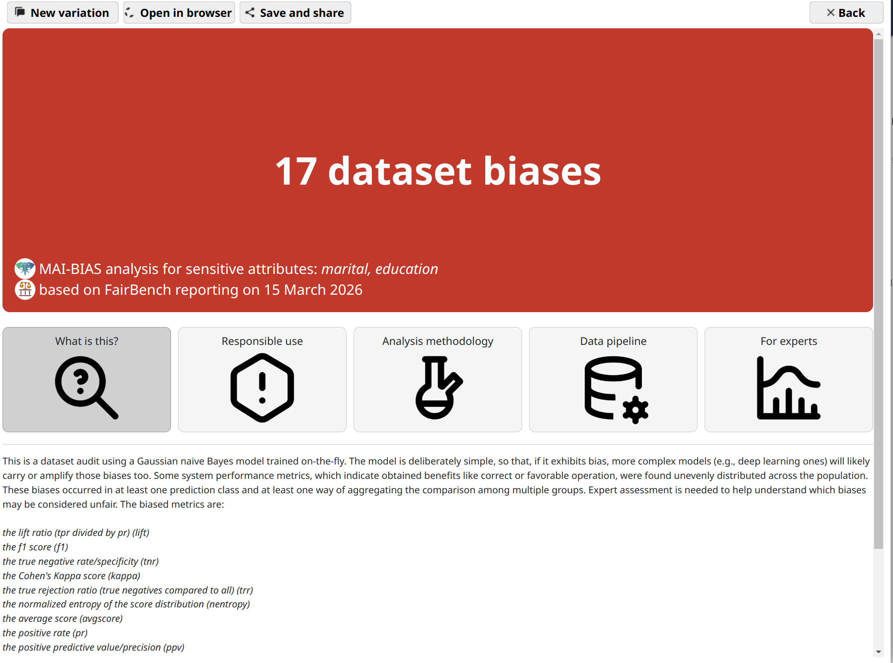
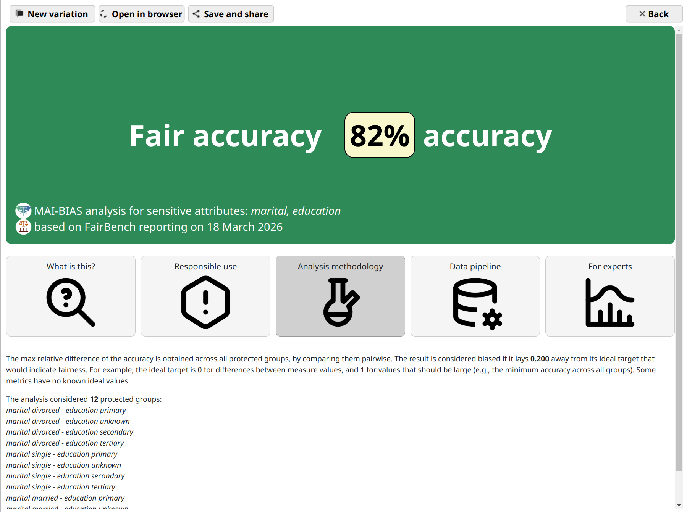
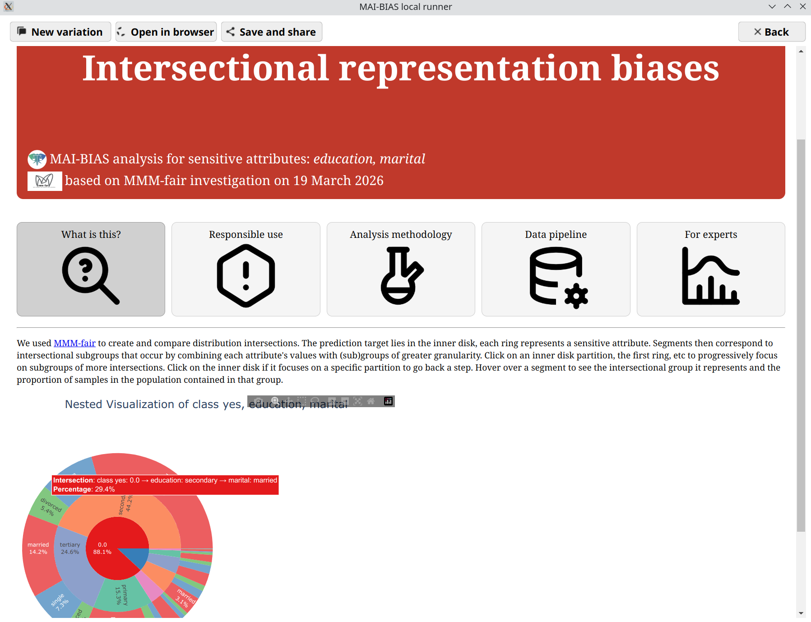
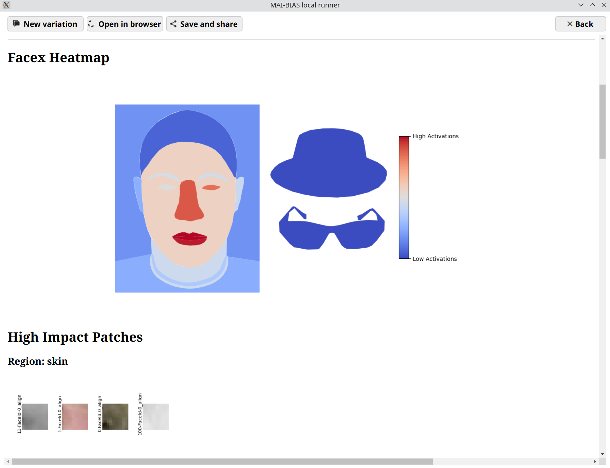
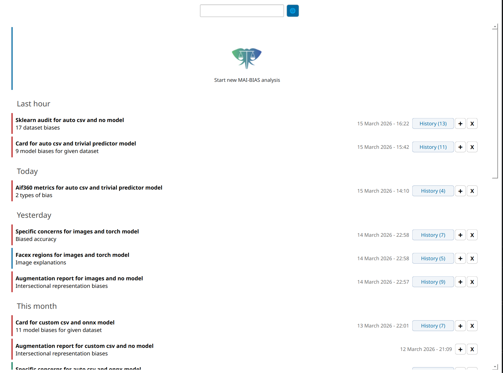
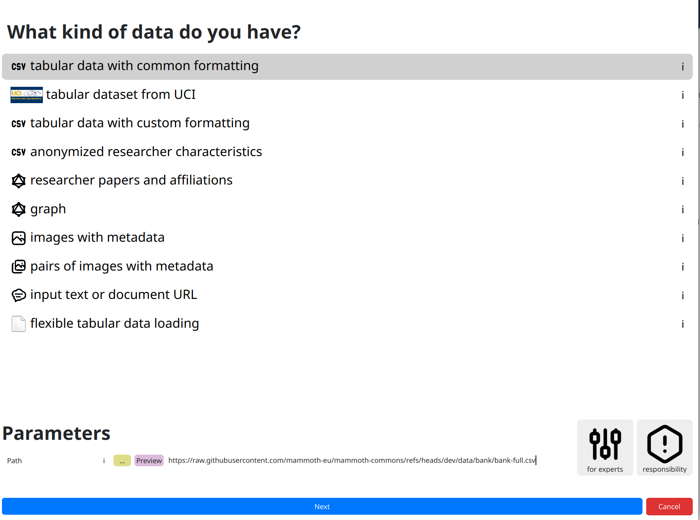
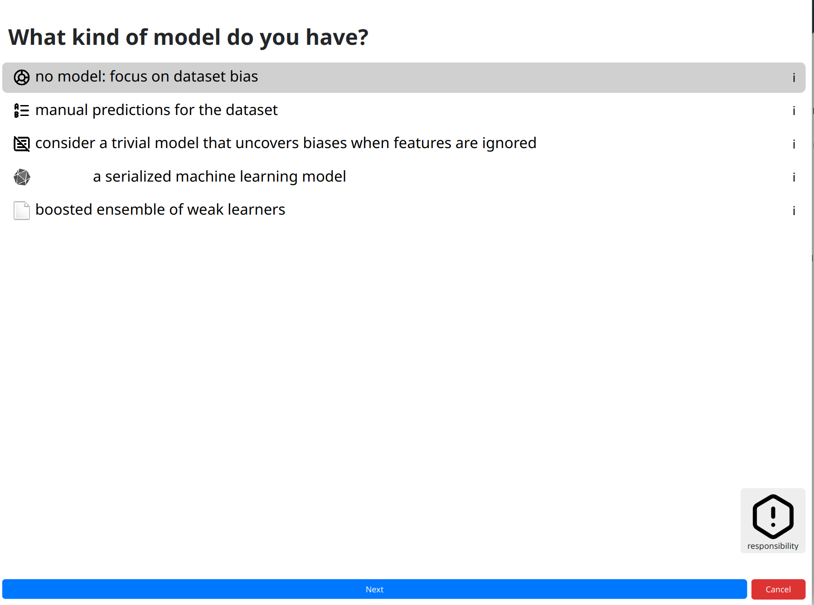
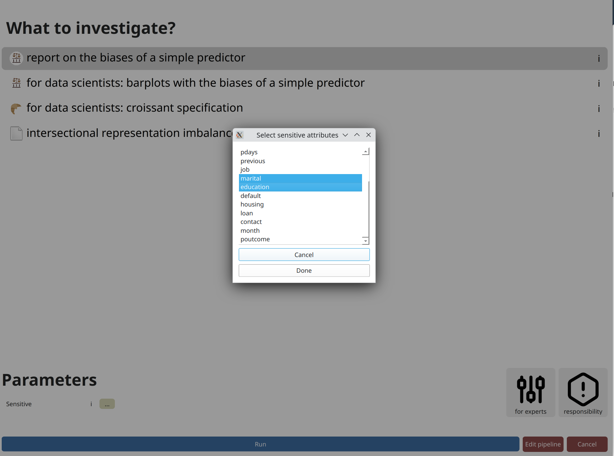

Our toolkit


The MAI-BIAS toolkit is a low-code fairness assessment and bias mitigation app. It contains 40+ modules from our partners and third parties, accessible through a standardized interface. It adjusts to your setting with out-of-the-box support for many data types, models, and fairness concerns.
How to ...
Audit a dataset in 10 clicks. Investigate and summarize hundreds of model biases.
Are you a non-coder? Everyone can explore results, including policymakers and non-experts.
Toolkit gallery
Click on any screenshot to enlarge it.








Reuse our software
Apply bias detection and mitigation code in your projects independently. Software listed here also supports the MAI-BIAS toolkit.

FairBenchAny dataLibrary


A comprehensive AI fairness exploration library with >300 standardized measures. It can parse any data modality, including generated text.

MMM-fairAny dataLibrary


A library that supports high-stakes AI decision-making under competing fairness and accuracy demands.
FairBranchAny dataAlgorithm

Implementation of FairBranch pipelines for vision and tabular modalities.

FB-tinyTabular dataTerminal

Terminal tool for bias audit. Vs one FairBench or AIF360 run:
x30 faster
x17 less energy
x50 less memory

VB-MitigatorVisionAlgorithm


Implementation and evaluation of existing and new visual bias mitigation methods.


SDFDVisionDataset

A synthetic face image dataset that captures broad facial diversity (demographics, biometrics, non-permanent traits).
HyperFairNetworksLibrary


A Python library for generating, evaluating, and improving rankings under fairness constraints.

pygrankNetworksAlgorithm


Node ranking in large graphs. Contains MAI-BIAS methods for debiased graph mining.